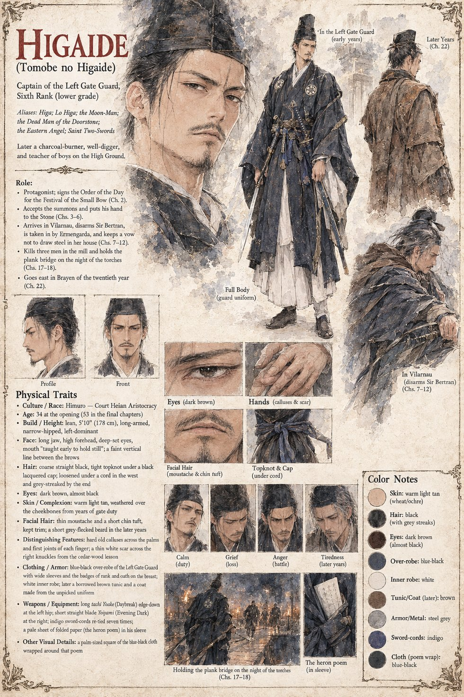

Higaide
Tomobe no Higaide · Captain of the Left Gate Guard of Himuro, Sixth Rank (lower grade) · 34 at the opening, 53 at the close · called Higa, Lo Higa, the Moon-Man, the Dead Man of the Doorstone, the Eastern Angel and Saint Two-Swords
A lean man with a long jaw and a left hand that is, to the lasting distress of every instructor he has ever had, the stronger of his two: Tomobe no Higaide, thirty-four, Captain of the Left Gate Guard of Himuro, of the Sixth Rank in its lower grade. He wears the long tachi Yoake, Daybreak, at the left hip and the short straight blade Yoiyami, Evening Dark, at the right, a pairing the court takes for an affectation and which he owes to a one-eyed veteran who once beat him senseless in a cedar wood and then, apologizing profusely, showed him how it was done. He puts down the household's plums in salt and red shiso himself, writes poetry as a bear dances, and is the husband of Shizuka and the father of Tsuru, six. On the twelfth of Eldren he is given the Minister's grandson for the day. He signs the Order of the Day for the Festival of the Small Bow, spends an hour teaching Kiyomaro to settle the nocking-point against his thumb, and is forty paces away when Azuki catches the pony's hock. Perfect, he tells the dying boy, and will say the word, in two languages and to no one who understands it, on a great many mornings afterward.
The Fifth Article of Arikuni's Law makes the officer who signs the Order answer for the day. The one thing that would have excused him, the Examiner's eleven sheets, is shelved at the Minister's pleasure, and a motive is supplied by a paid memory. He accepts the summons. His cousin Narimune sends four lines and three horses to the Northern Gate; he laughs once at the last line and does not go, because the Law holds that a fugitive's kin forfeit the estate and, more simply, because he does not think it necessary: an innocent man who believes in the Stone has nothing to fear from it. At Mikusa he turns down Jōkei's offer of a door at the back of the chamber (There is no door for an innocent man), asks leave to say one sentence, that he has not done it and that he loved the boy, and sets his left palm on the Stone as a man lays his hand on the neck of a horse he has been told is gentle. It will be entered, says Arikuni. The pale grain pours out of him, swords and all.
He comes up out of the tally-stone of Vilarnau at dusk with his hand still out, reasons that he must be dead and the country a provincial afterlife, and waits with great composure for someone to tell him where to report; Peire, eight, bows back. He disarms Sir Bertran de Lanta when the knight takes a bow for a reach for the hilt, is taken in by Ermengarda, eats around the bacon, claps at Solan's fire, learns the language from Gersenda, becomes Higa, and lays his palm on the stone every morning to say a name. When he learns what became of the last man out he goes into the barn and breaks, against the flank of the red ox, and vows to it not to draw his swords in that house. On the first of Kerren he keeps the vow until the loft is entered, kills three men in a dozen heartbeats, and holds the plank bridge over the lower race on the night of the torches for perhaps a quarter of an hour. On the ridge he is for nineteen years a charcoal-burner, a well-digger, a mender of ploughs, a teacher of boys with sticks and a poet who burns every verse, and on the first of each month he walks down to the green and says a name to the stone. When the stone is gone he says it once to the hollow, bows to the mute stonecutter, and in Brayen goes east with a sack of chestnut flour. The east records him as a murderer consumed for his guilt, and the west as a minor local saint; the Observer's closing note says he was neither.
He is carried on into Case 4181, where the author calls him the main character, and appears in Case 0202; the manuscript's revision log says that he is not dead and returns to his homeland, and meets his wife and daughter, after later cases (0202, 1414, 0333 and 0456). The manuscript gives his name, rank, age, swords, habits and aliases. The sheet's 5 ft 10 in, warm light-tan skin, thin moustache and chin tuft, grey-flecked beard and streaked hair in the later years, the thin white scar across the right knuckles and the indigo sword-cords are its own. Where the sheet has him go east in Brayen of the twentieth year, the manuscript's text puts it in the nineteenth, and its revision log says to read it so.
“There is no door for an innocent man. That is the whole point of it.”